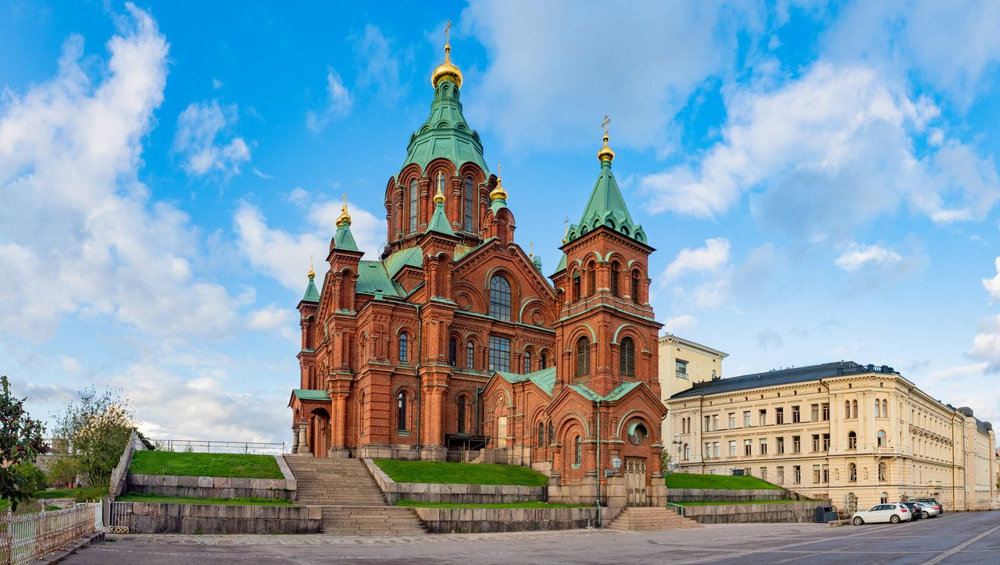
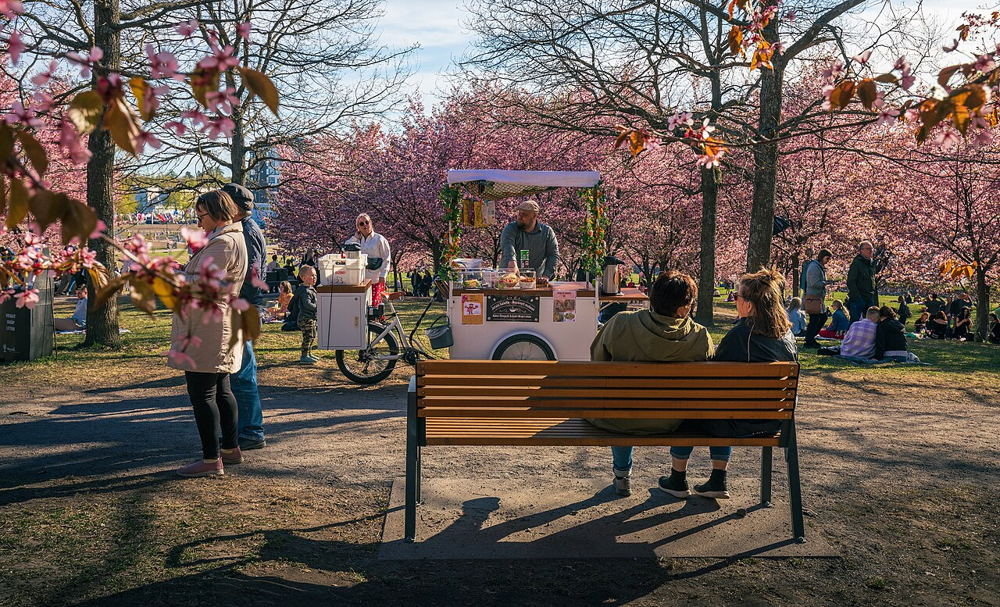
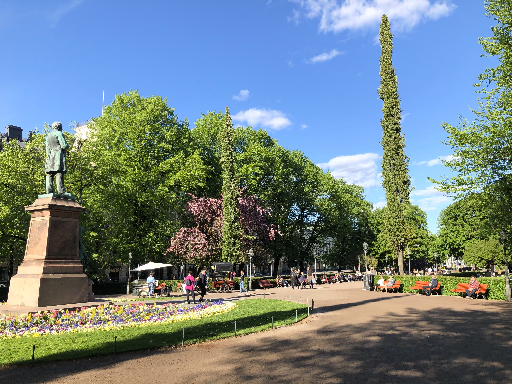
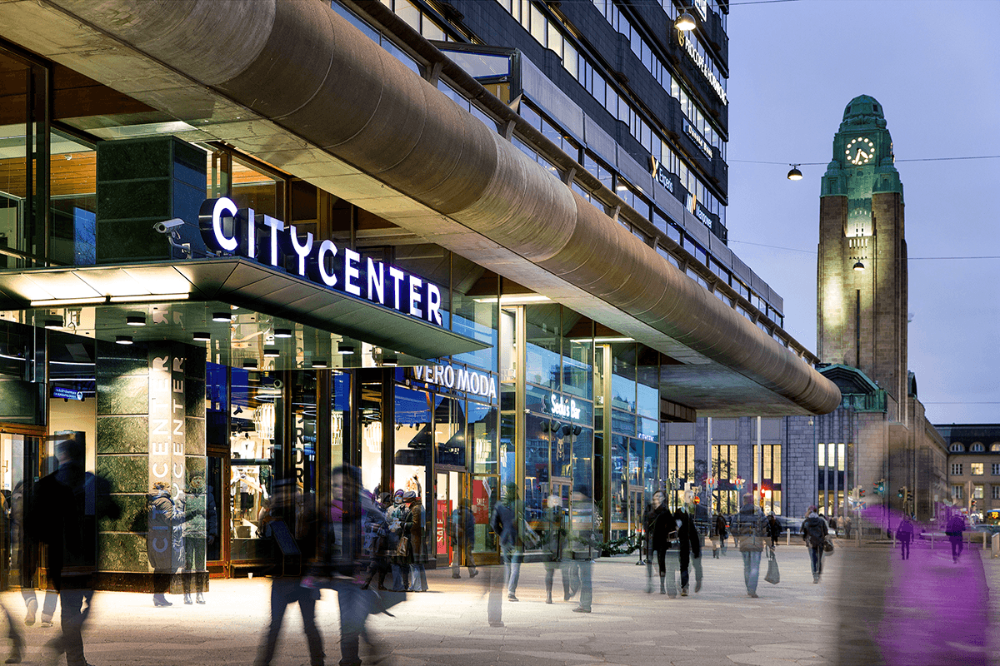

HELSINKI
Finland’s vibrant capital known for seaside charm, design, and culture.
Best Place to Visit
- Suomenlinna Map
- Helsinki Cathedral Map
- Uspenski Cathedral Map
- Old Market Hall Map
Parks
- Esplanadi Map
- Kaivopuisto Map
- Lauttasaari Map
- Sibelius Park Map
Shopping & Markets
- Kamppi Shopping Centre Map
- Forum Helsinki Map
- Mall of Tripla Map
- Stockmann Department Store Map
Restaurant & Café
- Café Regatta Map
- Fazer Café Map
- Old Market Hall Food Stalls Map
- Restaurant Savotta Map
- Story Café Map
Family Fun
- Linnanmäki Amusement Park Map
- Leikkipuisto Ruoholahti Map
- Töölönlahti Park Playground Map
- Kaisaniemi Playground Map
Best Beaches
- Hietaranta Beach Map
- Aurinkolahti Beach Map
- Pihlajasaari Beach Map
- Mustikkamaa Beach Map